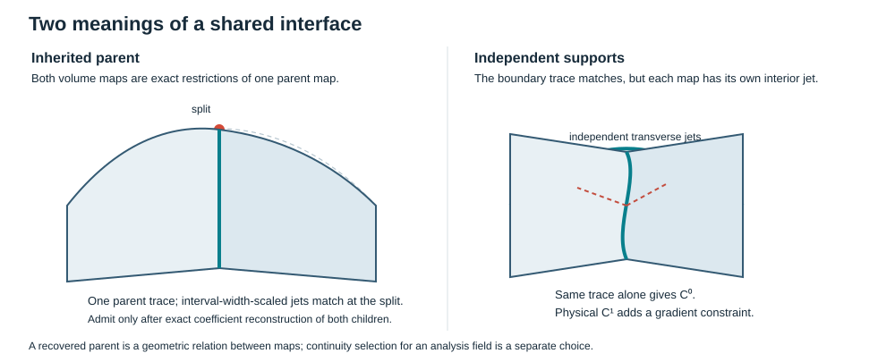

Recovering parents and choosing interface continuity
A recovered support

A parent split carries its transverse jets through the split ratio. For independent supports, matching values establish C⁰ only; physical C¹ is an additional analysis constraint.
Take two adjacent homogeneous Bézier nets with an audited complete face. Orient their tangential axes consistently and elevate their traces to common degrees. On the whole face, the two nets must agree up to one positive homogeneous scale. A single positive ratio of normal interval lengths must also fit their first jets. The candidate parent is then split at that ratio with de Casteljau’s algorithm. Admission requires coefficient identity on both complete volume nets. A shared tangent plane or a successful point test is insufficient.
recover-pair-parents MODEL REPORT exposes that test. A vanishing jet
can leave the width ratio undetermined. A checked-arithmetic limit also
produces an indeterminate result. The output separates these from a proved
incompatible pair. A recovered algebraic support is evidence about the two
maps; identifying which historical feature created them needs provenance.
The eight audited curved model states have 367 full interfaces. Of those, 107 recover a complete parent, including 13 on lateral axes. The five FieldCraft variants account for 55 tested interfaces and zero recovered parents. The independent oracle splits the recovered parents with rational arithmetic and compares both source nets. Per-model evidence and reproduction.
Three different field constraints
Trace C⁰. Identifying compatible displacement values leaves transverse derivatives free.
Inherited continuity. For two restrictions of one translated section, derivative rows use the actual interval widths. Across the 68 polygonal models, 617 of 3,136 complete interfaces admit this axial construction. For quadratic axial fields the sum of scalar dimensions drops from 7,829 to 6,751.
Physical C¹ across independent supports. In local coordinates a scalar field has physical gradient \(J^{-T}\nabla_\xi u\). Equate these gradients after mapping both traces to the same location and orientation. The compiler checks the resulting signed rational lift and affine reproduction. This operation can reduce the approximation capacity of the field substantially.
classify-transverse-transitions reports which jets satisfy a constant
or affine transverse transition. It also emits a separate exact AS-G¹ gluing witness for regular bilinear section edges. See Selecting displacement continuity for the two criteria and matched-dimension mechanical measurements.
export-inherited-space constructs the space requested by the plan.
audit-inherited-space and the independent field oracle check the
result. Use solve-inherited-space to compare two selections under
the same material, load and essential boundary conditions.
On the cubic-section cylinder, enforcing one physical C¹ rail gives 552 free displacement coefficients and a relative energy-norm error of 6.19%. Enforcing every rail leaves 144 coefficients and raises the error to 55.02% on the same manufactured problem. The stiffness residual and rank checks alone would miss that loss. Field measurements, loads and negative controls.
Collin, Sangalli and Takacs analyse how multipatch geometry affects the approximation of globally C¹ fields on two-dimensional parametrized domains. Their analysis explains why the choice of gluing data matters. The exact constraints and 3D measurements above apply to the explicitly tested volume families. Analysis-suitable G¹ multi-patch parametrizations for C¹ isogeometric spaces.